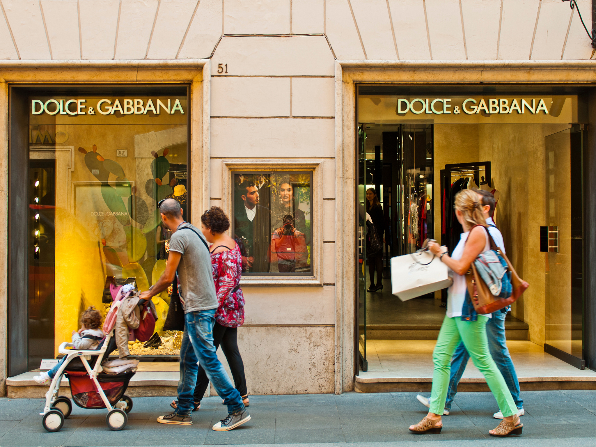
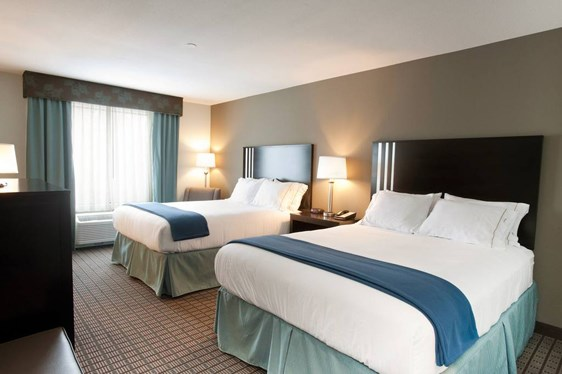

Adventure Awaits!
McCall, Idaho is a small mountain town located in the western part of the state. Known for its stunning natural beauty and outdoor recreational opportunities, it is a popular destination for tourists and outdoor enthusiasts alike. Nestled in the heart of the Payette National Forest, McCall is surrounded by towering peaks, sparkling alpine lakes, and dense forests. This picturesque setting provides the perfect backdrop for a wide range of outdoor activities, including hiking, fishing, camping, and skiing. In the winter months, the nearby Brundage Mountain Resort is a popular destination for skiers and snowboarders, while in the summer, visitors can take advantage of the many hiking and biking trails that wind through the surrounding wilderness. One of the most popular attractions in McCall is Payette Lake, a large, crystal-clear lake that offers a variety of water sports and activities. Visitors can rent boats or jet skis, go fishing, or take a leisurely cruise on a tour boat. The lake is also a popular spot for swimming, sunbathing, and picnicking.

Eat
Shop
Stay